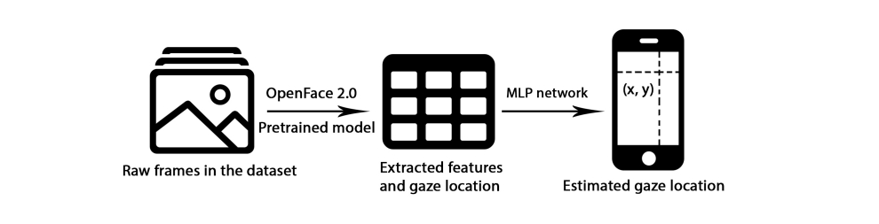

Project Overview
In this project, a gaze tracking model is built through a mobile device camera. Since the size of the training set is 136 GB and the training time and computational power are quite limited, this work first considers two face alignment models, from which the better one is chosen to generate features for each image. this step compresses the size of the training data set to 2 GB. subsequently, several MLP models are built to train the predicted gaze points. By adding and deleting features and adding mathematical analytic solutions to the input, the accuracy of the model was achieved below 3 cm. Comparing the accuracy between different MLP models, this project also identifies a subset of features that are more influential for training gaze tracking models in comparison.
Finally, this project analyzes the possible causes of errors in this model and concludes two following points: first, the dataset is collected by the mobile device cameras, and thus the lighting and face dressing are more diverse than other datasets, which may lead to the failure of the pre-trained model to extract features. Second, some mathematical analytical solutions used in the training of the MLP network are approximate and have errors.
Experiment process
The algorithm involves two parts:
1. Extracting features from raw frames using a pre-trained model.
2. Train a multilayer perceptron (MLP) network to estimate gaze location by the generated features.
Dataset pre-processing
The dataset used in this experiment is from a previous work Eye tracking for everyone posted in 2016. It contains 1479 zipped file and each file is named by the unique number of participants. Every zipped file contains a folder of 98 frames and their corresponding json description file. Here is the detailed structure and descriptions of each file.
The first step of dataset processing is the unit conversion. The unit of length taken from Apple mobile devices is point, which is the absolute length and does not vary with the pixel density of the screen. For example, for a conventional screen, Apple states that 1 point is equal to 1 pixel, and for a Retina screen 1 point is equal to 2 pixel. All units of length are converted to centimetres for calculation.
The second step is to convert the data gathered from different devices into the same plain. A prediction space is defined and the camera is set as (0,0) in Cartesian coordinates and the locations of dots are computed in centimeters. The orientation of mobile devices are also considered.
Feature extraction
The size of dataset is around 136 Gigabyte, by which it will take several months to train a deep learning model using a normal GPU. Thus the dataset need to be processed and compressed before it is used to train the model. The main reason is that both computational devices and time are limited in this work. It is impossible and ineffective to train the model with the full images. The more elegant way to achieve it is to train the model with featured map of each frame. Therefore, this work requires features to be extracted from the complete picture first.
OpenFace 2.0 is implemented to finish this task. 68 face landmarks and 56 eye landmarks are extracted from the original pictures.
Gaze angle calculation
To compute the gaze angle, it is assumed that the eyeball to be a sphere. A ray is drawn from the camera origin through the center of the pupil in the image plane, and the intersection of this ray and the eye-ball sphere is calculated. The point is approximate to the pupil location in 3D camera coordinates.
MLP network
Several MLP networks is built by selecting different input features. In best situation, the error can ne reduced to approximately 3 cm.
By comparing the error of modal trained by different features, the following features are proved to be irrelevant in gaze estimation: head pose, facial expression (Facial action unit recognition), rigid face shape parameters and face landmarks. The following features are proved to be strongly relevant: The height and width of mobile screen and the pupil location.
Another informative finding is that adding a suitable mathematical analytical solution can greatly improve the efficiency of the model. In many cases, using a mathematical analytic solution instead of a set of eigenvalues not only improves accuracy, but also reduces the size of the input matrix, making the training process much faster.
Two mathematical analytic solution is added in the experiment:
1. using computed pupil location and gaze angle to replace 68 face landmarks and 56 eye landmarks.
2. adding the intersection of gaze ray and screen plane into features.
Both of these mathematical analytical solutions significantly improve the accuracy of the model.
How to run this work
The initial dataset is 136GB and too large to be put on Github. It can be downloaded from the official website of GazeCapture. (https://gazecapture.csail.mit.edu/). To run the model, execute the following steps in order:
Step 1: download nn.ipynb, dataset_processing.py and dataset.csv from github repository.
Step 2: Make sure all three files are in the same path, don’t change the name of the file, and execute data_prosessing.py
Step 3: Run jupyter notebook, execute nn.ipynb one paragraph by paragraph.